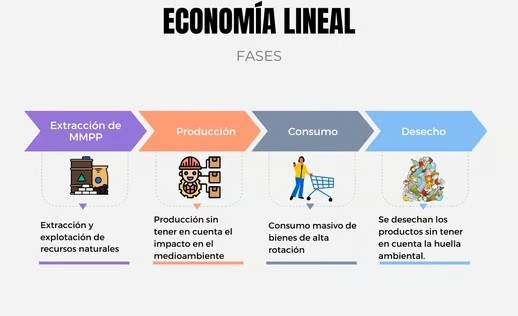

La economía lineal es el modelo tradicional de producción y consumo que ha dominado durante décadas. Se basa en una secuencia sencilla pero poco sostenible: extraer materias primas, fabricar productos, usarlos y desecharlos. Este sistema se resume en el ciclo “extraer, producir, consumir y tirar”, donde los recursos naturales se explotan sin considerar su regeneración ni el destino final de los residuos.

Este modelo ha impulsado el desarrollo industrial y tecnológico, pero también ha generado graves consecuencias ambientales, como la sobreexplotación de recursos, la contaminación del aire y del agua, y el aumento de los residuos electrónicos (RAEE). En el ámbito de las TIC, esto se traduce en un consumo acelerado de dispositivos, una corta vida útil de los equipos y un elevado volumen de desechos tecnológicos.
Además, la economía lineal no solo afecta al medio ambiente, sino también a la economía y la sociedad. La dependencia de materias primas finitas hace que los costes aumenten y que las empresas sean más vulnerables ante crisis de suministro o energía. Por eso, cada vez más organizaciones y gobiernos apuestan por transformar este modelo hacia la economía circular, que busca mantener los recursos en uso el mayor tiempo posible, reducir residuos y generar un desarrollo más sostenible.